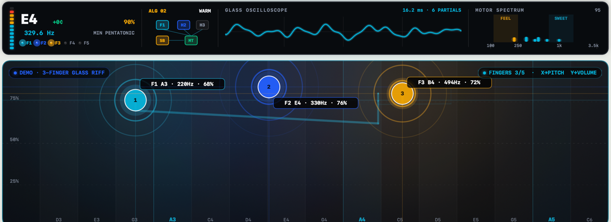

01 / FIVE-FINGER POLYPHONY
Hear & feel five fingers on glass.
Every fingertip gets a guaranteed fundamental pitch inside the Force Touch actuator’s six-partial engine, backed by a 32 ms anti-flicker grace window so chords hold steady without cutting out.
The recessed OLED tracks live note accuracy, an FM-style harmonic operator schematic, real-time composite oscilloscope, and the motor’s tactile FEEL and acoustic SWEET frequency bands.
